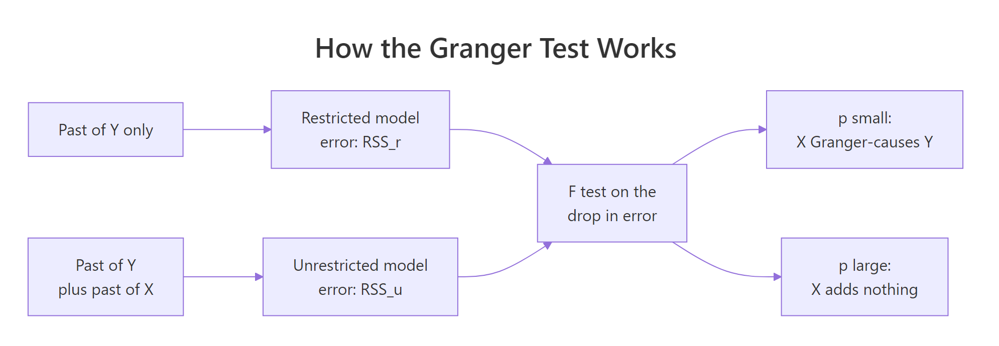
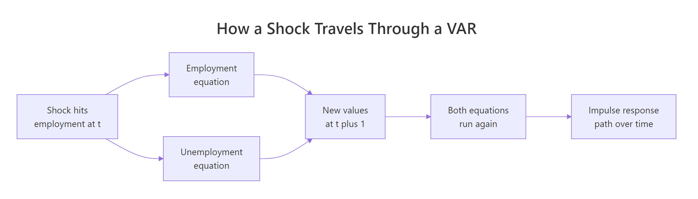
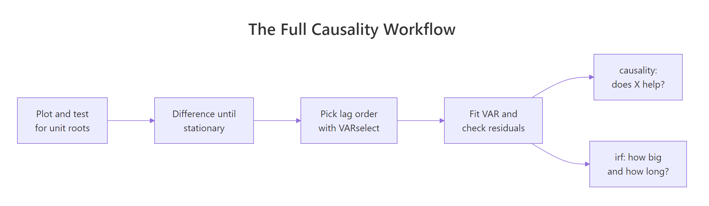

Granger Causality and Impulse Responses in R
A series X Granger-causes a series Y if the past of X improves a forecast of Y beyond what Y's own past already delivers. In R you test that with grangertest() for two series or causality() on a fitted VAR, then use irf() to see how large the effect is and how long it lasts.
Which came first, the chicken or the egg?
It sounds like a joke until someone hands you 54 years of US farm records. Chicken population and egg production both rise and fall together, and the question of which one moves first is exactly the kind of question a Granger causality test was built to answer. The ChickEgg dataset ships inside the lmtest package, so one line of code gets you a verdict.
The formula reads backwards from what you might expect. chicken ~ egg means "test whether egg helps predict chicken", so the variable being forecast is on the left. The order = 3 argument says each model looks three years into the past.
R fitted two models and compared them. Model 2 predicts this year's chicken population from the last three years of chicken populations alone. Model 1 does the same but also hands the regression the last three years of egg production. The Df column reads -3 because Model 2 has three fewer predictors than Model 1, and Res.Df is how many observations are left over after estimating each model. The F statistic of 5.405 and its p-value of 0.002966 say the extra egg columns cut the forecast error by more than chance would explain.
In plain terms: knowing how many eggs were laid in recent years genuinely sharpens a forecast of next year's chicken population. Now let us look at the raw numbers behind that verdict.
Two columns, 54 annual observations, running from 1930 to 1983. chicken counts birds in thousands and egg counts eggs in millions of dozens. The plot shows both series drifting upward with wobbles along the way, which already hints at a problem we will come back to.
A causality claim is only interesting if it points one way. So let us run the mirror-image test.
A p-value of 0.6238 is nowhere near small enough to count as evidence of anything. Past chicken populations add nothing measurable to an egg forecast once egg history is already in the model.
So the evidence runs one way. Eggs carry information about future chickens; chickens carry no information about future eggs. That is the same conclusion Thurman and Fisher reached in a 1988 agricultural economics paper, which is why this dataset has been a teaching classic ever since.
Try it: Rerun both directions with four lags instead of three. Does the verdict survive a change in the lag setting?
Click to reveal solution
Explanation: grangertest() returns an anova table, so $Pr(>F)[2] grabs the p-value from its second row. The verdict holds at four lags: 0.0057 for eggs predicting chickens, 0.8125 the other way.
What is the Granger test actually comparing?
You just trusted a p-value from a function you have not opened. Let us open it. The whole test is a nested-model comparison you could write yourself in three lines of base R, and once you have seen the machinery you will never misread the output again.

Figure 1: The Granger test compares two forecasts of the same series and asks whether the extra predictors earned their place.
The first job is turning a time series into a regression table, where each row holds this year's value alongside the previous few years' values. embed() does exactly that shifting for you.
embed(x, 4) builds a matrix whose first columns hold the current values and whose later columns hold values from one, two and three periods back. Read row 1 across: the 1933 chicken count of 444523 sits beside its three predecessors, 436815 from 1932 back to 468491 from 1930.
Three years of history have to exist before any row is usable, so 54 observations become 51 rows. That is the same sample the test used internally.
Now fit the two competing models on that table. The restricted model sees only the chicken series' own past. The unrestricted model also sees the egg columns.
Look at the F statistic: 5.405. Look at the p-value: 0.002966. Those are the exact numbers grangertest() printed in the first code block of this tutorial. The Granger test is an anova() call on two nested regressions, nothing more exotic than that.
The RSS column is the one to read. Residual sum of squares is total squared forecast error, so smaller is better. Adding three egg columns dropped it from 28.8 billion to 21.1 billion, a reduction of 7.76 billion. The F test asks whether a drop that size is worth the three extra parameters it cost.
You can compute the statistic by hand to see there is no magic in it.
The numerator is the error you removed, divided by the number of restrictions you relaxed. That is "improvement per extra parameter". The denominator is the error you could not remove, divided by the degrees of freedom left over. That is "typical noise per observation". Their ratio is 5.405, and pf() converts it to the p-value 0.002966.
If you would rather see the same idea as a formula, here it is. Skip this box freely; the code above is the whole explanation.
$$F = \frac{(RSS_r - RSS_u)/q}{RSS_u/(n - k)}$$
Where:
- $RSS_r$ = squared error from the restricted model, which uses only Y's own past
- $RSS_u$ = squared error from the unrestricted model, which adds X's past
- $q$ = number of X lags you added, so 3 here
- $n - k$ = residual degrees of freedom in the unrestricted model, so 44 here
Try it: Print the three egg coefficients from the unrestricted model with their individual t-tests. Only one of them is significant on its own, yet the joint test was decisive. That gap is worth seeing.
Click to reveal solution
Explanation: Only the first lag clears the usual 0.05 bar on its own. The other two look like noise individually, but the joint F test still rejects because the three coefficients together remove real error. Never decide Granger causality by scanning individual t-statistics; that is what the F test is for.
What can make a Granger test give the wrong answer?
A Granger test will hand you a p-value for any two columns of numbers you feed it. It will not warn you when the answer is meaningless. Two specification mistakes account for almost every wrong published result, and both are easy to avoid once you have seen them fail.
Trap 1: series that wander instead of settling
A stationary series has a fixed mean it keeps returning to. A random walk has no such anchor: each step adds to the last, so it drifts wherever noise takes it. Econometricians say such a series has a unit root, which is the technical name for exactly this behaviour: the series never returns to a fixed level, but the differences between consecutive values do. The regression theory behind the F test assumes the first kind of series, and is simply not valid for the second.
Let us watch it break. We will generate two random walks from completely independent noise, so we know for certain that neither has any connection to the other.
cumsum(rnorm(200)) is the textbook random walk: draw 200 independent normal shocks and add them up as you go. Two separate calls means two series that share nothing but their construction recipe.
Their plain correlation is 0.001, essentially zero, so this is not even the famous spurious-correlation case. And yet the Granger test returns p = 0.003364 and declares that walk_x helps predict walk_y. That result is pure fiction; we built the data ourselves and there is nothing to find.
The fix is to model the changes rather than the levels. diff() converts a random walk into the independent shocks that generated it, which is a stationary series.
On differences the p-value climbs to 0.3929 and the phantom relationship evaporates. The data did not change. Only the question did, from "do the wandering levels move together" to "do the year-to-year changes carry information about each other".
One seed proves nothing on its own, so let us repeat the experiment hundreds of times and count how often the test reports a relationship that we know is not there. To keep it fast we write the F test ourselves, using the same recipe from the previous section.
embed(cbind(y, x), order + 1) stacks both series into one lagged matrix, with the y and x columns alternating. Column 1 is the current y, so the odd columns from 3 onward are y's own lags and the even columns from 4 onward are x's lags. lm.fit() is the stripped-down regression engine underneath lm(), which makes it far quicker when you are calling it thousands of times.
The function returns 0.003364 on our seeded pair, matching lmtest exactly. It is the same test, just without the formula-parsing overhead. Now run it 300 times on fresh random walks.
Each iteration builds a brand-new pair of unrelated random walks and tests them twice: once in levels, once in differences. A 5% test should produce a false positive about 5% of the time, since that is what the threshold means.
On levels it fires 10.7% of the time, more than double what it promised. On differences it fires 4.7%, right on target. Run a Granger test on undifferenced trending data and you have roughly a one-in-nine chance of announcing a relationship that does not exist.
Try it: Random walks are not the only troublemaker. Build two independent series that share only a deterministic upward trend, and see whether the test can tell they are unrelated.
Click to reveal solution
Explanation: The noise in each series is independent, so the only thing they share is the straight line underneath. That is enough for a false positive at p = 0.0018. Differencing removes the common trend and the test correctly reports nothing at 0.4638. Any shared drift, stochastic or deterministic, can manufacture Granger causality.
Trap 2: picking the number of lags by feel
Every example so far used order = 3 because that is what tutorials tend to use. That is not a reason. Too few lags and you miss a delayed effect; too many and you burn degrees of freedom on noise. An information criterion picks the number for you.
Let us go back to the chickens, this time doing it properly. Both series trend upward, so we work with growth rates: the log difference, which is close to a percentage change year over year.
diff(log(x)) is the standard way to turn a level series into a growth rate: the 1931 chicken figure of -0.0408 means the flock shrank about 4.1% that year. VARselect() fits models at every lag from 1 to 8 and scores each with four criteria that trade fit against complexity. All four land on the same answer: one lag.
Before trusting that, it helps to see how much the verdict depends on the choice at all.
sapply() runs the pair of tests once per lag setting and t() turns the result into a readable table with one row per lag.
This is the outcome you hope for. Eggs beat the 0.05 threshold at every lag from 1 to 6, and chickens fail at every lag from 1 to 6. The conclusion does not hinge on a setting you chose, which is the strongest form a Granger result can take.
So here is the defensible version of the chicken-and-egg test: growth rates rather than levels, one lag rather than a guess.
An F of 11.869 and a p-value of 0.001179. Egg growth this year carries real information about chicken growth next year, and the finding survives both the stationarity fix and the lag sweep.
Try it: Run the same sweep on the raw levels, lags 1 through 4, for eggs predicting chickens only. Compare the pattern against the growth-rate table above.
Click to reveal solution
Explanation: On levels the verdict flips depending on the lag: nothing at all at lag 1 (0.2772), then decisive from lag 2 onward. That instability is a symptom of testing non-stationary data. The growth-rate version was stable across every lag, which is why it is the one to report.
How do you test causality when you have more than two series?
grangertest() handles exactly two series. Real systems have more, and that changes the question in a way worth being precise about. With three variables you can ask whether one of them helps predict the rest of the system, holding everything else constant. The vars package answers that through a fitted VAR.
A VAR, short for vector autoregression, is a system where every series gets its own regression equation and every equation includes the recent past of every series. For a deeper treatment of fitting and forecasting one, see VAR models in R. Here we only need it as the object the causality tests read.
We will use Canada, a quarterly dataset bundled with vars, covering the Canadian labour market from 1980 to 2000. Three of its columns interest us: prod (labour productivity), e (an employment index) and U (the unemployment rate). All three trend, so we difference them first.
diff() on a matrix differences every column, so each number is now a quarter-on-quarter change. In 1980 Q2 productivity fell 0.727 points while employment rose 0.193 and unemployment rose 0.17 percentage points.
The AIC row is worth reading rather than skimming. One lag scores -5.727 and two lags score -5.701, a gap of 0.026 that is close to a tie. Lags 3 and beyond are clearly worse. When the top two are this close, either is defensible, and we will take two so the system can produce delayed effects that a single lag cannot represent. We will check later that the conclusions do not depend on that call.
VAR(canada, p = 2, type = "const") estimates three equations at once, each predicting one variable from two lags of all three, plus an intercept.
The residuals are what each equation failed to predict, one number per variable per quarter. If those leftovers still correlate with their own recent past, which is what autocorrelation means, the model missed some predictable structure and needs more lags. The Portmanteau test has "the residuals carry no leftover autocorrelation" as its null hypothesis, so a large p-value is the good outcome here. At 0.9343 there is nothing left over, which means two lags soaked up the predictable structure. A causality test on a badly specified VAR is not worth running, so this check comes first.
Now the test itself.
Read the null hypothesis line carefully, because it is the whole point: e do not Granger-cause prod U. This is a joint test across the other two equations at once. It asks whether all four employment coefficients, two lags in the productivity equation and two lags in the unemployment equation, are zero together.
With p = 0.00006 they are emphatically not zero. Employment carries information about where both productivity and unemployment are heading. Econometricians call this a block exogeneity test, because it asks whether one block of variables can be excluded from the rest of the system.
Running it for all three variables gives you the pecking order of the system in one line.
sapply() loops over the three variable names and pulls out just the p-value from each test.
Employment leads by a distance at 0.00006. Productivity follows at 0.02218. Unemployment scrapes past the 0.05 line at 0.04891, which is the weakest evidence of the three and a number we should be suspicious of. In this labour market, employment is the series that moves first.
There is a second flavour of causality that the same function reports. Granger causality is about lagged effects. Instantaneous causality asks whether the surprises move together within the same quarter.
This test looks at the same residuals we just checked, but across equations rather than across time. If a quarter's productivity surprise tends to arrive alongside an employment surprise, something is moving the variables together faster than the data's quarterly resolution can separate.
At p = 0.000002 they clearly are. A plant closing cuts employment and raises unemployment in the same three months, so no amount of lag structure will disentangle them. Hold on to this result, because it is exactly what forces an awkward assumption two sections from now.
Finally, that lag choice we flagged. Does the ranking survive if we had picked one lag, or three?
The nested sapply() refits the VAR at each lag order and collects all nine p-values into a grid.
Employment and productivity stay significant in all three columns, so those findings are solid. Unemployment does not: it drifts from 0.0285 to 0.0489 to 0.1301, crossing the threshold somewhere between two lags and three. That borderline result in the previous block was not a real finding but an artifact of the lag setting, and this grid is how you catch that.
Try it: Get the instantaneous causality p-value for all three variables in one line, using the same sapply() pattern.
Click to reveal solution
Explanation: Productivity shocks are essentially uncorrelated with the rest within a quarter (0.451395), while employment and unemployment shocks move together almost perfectly (0.000002 from either side, because instantaneous causality has no direction). That asymmetry matters for the ordering decision coming up.
What does an impulse response show that the test cannot?
A Granger test gives you a yes or a no. That leaves three questions unanswered: how large is the effect, which direction does it push, and how long does it last. An impulse response function answers all three by running an experiment inside the fitted model.
The experiment is simple. Nudge one variable by one unit at a single moment, hold every other shock at zero, and let the estimated equations play forward. Whatever path the other variables trace is the impulse response.

Figure 2: A shock enters one equation, and every equation carries it forward, which is what the impulse response traces.
impulse = "e" says the nudge hits employment. n.ahead = 8 traces eight quarters beyond the initial one, giving nine rows. ortho = FALSE keeps the shock raw for now, and boot = FALSE skips confidence bands so we can look at the point estimates alone.
Row 1 is the moment of impact. Employment jumps by exactly 1.0000 because that is the shock we injected, and the other two sit at 0.0000 because nothing has had time to react yet.
Row 2 is one quarter later. Employment is still elevated at 0.9111, unemployment has fallen 0.5681, productivity has slipped 0.1645. The employment surprise has propagated through the other equations.
Reading down the unemployment column tells the story: a sharp fall of 0.5681, a smaller fall of 0.3661, then back to roughly zero by row 4, followed by a mild overshoot into positive territory around rows 5 and 6 before dying out. Employment gains push unemployment down hard for two quarters, then the effect reverses slightly before fading. A p-value could never have told you that.
Now let us confirm there is nothing hidden inside irf(). The response path is just the model's own coefficients multiplied together, and we can rebuild it by hand.
Bcoef() returns the estimated system as a matrix. Each row is one equation. Read row 3, the unemployment equation: this quarter's change in unemployment equals -0.155 times last quarter's productivity change, minus 0.568 times last quarter's employment change, and so on.
That -0.568 is the number driving everything. A one-unit employment surprise feeds straight into next quarter's unemployment with a coefficient of -0.568. Compare it to the -0.5681 in row 2 of the impulse response table. They are the same number.
Split the matrix into its two lag blocks and you can generate the whole path with a loop.
A1 holds the first-lag coefficients and A2 the second-lag ones. The list psi accumulates the response matrices horizon by horizon, starting from the identity matrix because at impact each variable responds one-for-one to its own shock and not at all to others.
Each new horizon feeds the previous two back through the system: A1 %*% psi[[h - 1]] propagates last quarter's state, A2 %*% two_back propagates the quarter before that. Column 2 of each matrix is the response to an employment shock, which is what sapply pulls out.
The largest discrepancy against irf() is 8.3e-17, which is rounding error from finite-precision arithmetic rather than a real difference. An impulse response is nothing more than your fitted model replayed forward from a nudge.
In formula terms, the recursion is one line. Skip it if the loop already made sense.
$$\Psi_h = A_1 \Psi_{h-1} + A_2 \Psi_{h-2}, \qquad \Psi_0 = I$$
Where:
- $\Psi_h$ = the matrix of responses at horizon $h$, with element $(j, i)$ being variable $j$'s response to a shock in variable $i$
- $A_1, A_2$ = the coefficient matrices on the first and second lags
- $I$ = the identity matrix, the impact response before anything has propagated
Try it: Confirm the first step of the recursion. At horizon 1 the previous matrix is the identity, so psi[[2]] should equal A1 exactly. Print A1 and compare it to row 2 of by_hand.
Click to reveal solution
Explanation: Multiplying anything by the identity matrix returns it unchanged, so the horizon-1 response matrix is A1 itself. Its e column reads -0.165, 0.911, -0.568, which is row 2 of the hand-built table once rounded. The one-quarter-ahead impulse response is literally the first-lag coefficient column.
Why does the order of your variables change the impulse response?
The impulse responses above shocked employment while holding the other two shocks at exactly zero. That sounds harmless. It is not, and the instantaneous causality test already told us why.
summary(var_fit)$covres returns the covariance matrix of the residuals, and cov2cor() rescales it to correlations for easier reading.
Employment and unemployment surprises are correlated at -0.681. In practice, quarters that surprise on the upside for employment surprise on the downside for unemployment, more than two-thirds of the time. So "shock employment by one unit while unemployment does nothing" describes a quarter this economy has essentially never had. The raw impulse response answers a question about an event the data says does not happen.
The standard repair is to transform the correlated shocks into uncorrelated ones. chol() does the arithmetic.
A Cholesky decomposition finds a lower-triangular matrix P whose product with its own transpose rebuilds the covariance matrix, which all.equal() confirms is exactly true here. Think of it as a square root for matrices.
The triangular shape is the whole story. P has zeros above the diagonal, which means a productivity shock is allowed to move all three variables on impact, an employment shock may move employment and unemployment but not productivity, and an unemployment shock may move only itself. That ordering is not something the data revealed. It came from the order of the columns we happened to pass to VAR().
Watch the ordering show up directly in the orthogonal impulse response.
The impact row of the orthogonal impulse response is the e column of the Cholesky factor, digit for digit. That is not a coincidence; irf(ortho = TRUE) starts the recursion from P instead of the identity matrix.
Notice the impact effect on unemployment is now -0.2148 rather than the 0.0000 we saw with ortho = FALSE. The orthogonal version lets employment move unemployment within the quarter, because the correlation says it does. But the response of productivity is pinned at exactly 0.0000, not because the data says so, but because we listed productivity first.
Change the order and the numbers change with it. Here we put unemployment ahead of employment and rerun.
Both columns come from the same data, the same lag order and the same estimated coefficients. The only difference is which column was typed first.
At impact, one ordering says an unemployment shock has zero effect on employment and the other says it drops employment by 0.2535. The two columns disagree about the sign at horizon 1 and about the size everywhere. If you reported the left column as "the" impulse response, a reader could reproduce your work exactly and get the right column.
Try it: Confirm that this problem is specific to the orthogonal version. Compare the raw, non-orthogonal response of productivity to an employment shock under both orderings.
Click to reveal solution
Explanation: Identical to four decimal places. Column order cannot touch the non-orthogonal response, because it never uses the residual covariance matrix. Ordering matters only once you orthogonalise. The trade-off: the raw version is order-free but answers a question about an implausible event, while the orthogonal version is plausible but needs an assumption from you.
How do you tell a real impulse response from noise?
Every number in those impulse response tables was estimated from 82 quarters of data, so every number carries sampling error. A response that looks like a clean hump might be a fluke. Confidence bands settle it, and irf() builds them by bootstrap.
Here is what runs = 200 actually does. R resamples the model's residuals, reassembles 200 synthetic datasets from the fitted coefficients, refits the VAR on each, and records the impulse response every time. The 2.5th and 97.5th percentiles of those 200 paths become the band. seed = 7 makes the resampling reproducible, so you and a reader get the same interval.
Now read it. The rule is simple: if the band contains zero at a given horizon, the response is not distinguishable from no effect at all.
At horizons 0, 1 and 2 the entire interval sits below zero, from -0.2721 to -0.1265 at impact. That is a real, negative effect. At horizon 3 the upper bound turns positive at 0.0247, and from there on every interval straddles zero.
So the honest summary is: an employment surprise pushes unemployment down for about three quarters, and after that the model cannot tell you anything. The mild positive overshoot we noticed earlier in rows 5 and 6 is noise; the band there runs from -0.0492 to 0.0763.
When the question is total effect rather than timing, the cumulative version adds the path up as it goes.
cumulative = TRUE reports the running total instead of the per-quarter value, so row 4 is the sum of the first four quarterly responses.
The total settles around -0.59 by horizon 4 and stays there, which is the signature of an effect that has finished. And the band never covers zero at any horizon, running from -0.9310 to -0.2690 even at the end. Quarter by quarter the late responses were indistinguishable from noise, but the accumulated effect is unambiguous: an employment surprise of this size is worth roughly six tenths of a point off unemployment in total.
Try it: Build the same band table for a productivity shock hitting unemployment, six quarters ahead, using seed = 11. At which horizons is the effect distinguishable from zero?
Click to reveal solution
Explanation: At impact the band spans zero (-0.0867 to 0.0592), so nothing is happening yet, which makes sense because productivity is ordered first and cannot be pushed by anything in the same quarter. From horizon 1 through 4 the whole band is negative, so a productivity surprise lowers unemployment with a one-quarter delay and the effect lasts about a year. By horizon 5 it is gone. This is a delayed response, which the shape of the band reveals and a single p-value would have hidden.
What if your series are not stationary or are cointegrated?
We differenced everything to avoid the trap from earlier, and differencing has a cost: it throws away information about the long-run levels. If two series drift together over decades, that shared trend is often the most interesting thing about them, and a differenced model cannot see it. Two series that each wander on their own but stay tied to each other in the long run are called cointegrated, and that tie is exactly what differencing discards.
Toda and Yamamoto proposed a way to test causality on the levels directly, in a 1995 paper. The trick is disarmingly simple. Fit the VAR with extra lags beyond what the criteria suggest, then test only the original lags and ignore the extra ones. Those surplus lags absorb whatever unit-root behaviour is present, so the test statistic keeps its usual chi-square distribution even when the series wander.
Two numbers set it up: the lag order p chosen the usual way, and d_max, the highest order of integration among the series, which is just how many times you would have to difference the most stubborn one.
ndiffs() runs a unit-root test and reports how many differences the series needs. Both return 1, so both are what econometricians call I(1) and d_max is 1. VARselect() on the levels picks two lags unanimously, so p is 2.
That means we fit a VAR with 2 + 1 = 3 lags on the raw, undifferenced data.
ty_fit$varresult$chicken is the ordinary lm object for the chicken equation, and its coefficient names show the layout: three lags of each series plus an intercept.
This is the same regression you fitted by hand in the second section of this tutorial, when you built unrestricted with three lags of each variable. The difference is entirely in what gets tested. grangertest() tested all three egg lags. Toda-Yamamoto tests only egg.l1 and egg.l2, deliberately leaving egg.l3 alone as the padding that makes the test valid.
Testing a subset of coefficients jointly is a Wald test, and it is short enough to write directly.
Walking through the function: coef(eq) pulls the estimates, vcov(eq) pulls their covariance matrix, and match() finds the positions of the lags we want to test. The Wald statistic asks how far those coefficients sit from zero, measured in units of their own uncertainty, which is what sandwiching the inverse covariance between them accomplishes. Under the null it follows a chi-square distribution with p degrees of freedom, so pchisq() finishes the job.
Eggs give a Wald statistic of 10.803 and a p-value of 0.00451. Chickens give 0.9216 and 0.63078. The verdict is unchanged from every other route we took, and this time it came from the levels, with no differencing and no assumption that the series are stationary.
That agreement is the real payoff. Three different methods on three different transformations of the same data all point the same way, which is far more convincing than any single p-value.
Try it: Rerun the procedure with three lags instead of two, keeping d_max at 1, so the augmented VAR has four lags. Does the conclusion hold?
Click to reveal solution
Explanation: The p-value for eggs moves from 0.00451 to 0.00783, still comfortably significant, and chickens stay nowhere near the threshold. Note the direction of the shift: adding a lag raised the p-value slightly because the extra degree of freedom has to be paid for. That is the power cost mentioned above, visible in a single number.
Complete Example: do European stock indices lead each other?
Labour market data has slow, visible dynamics. Financial data is the opposite, and it makes an honest test case because a strong result would contradict a lot of finance theory. EuStockMarkets ships with base R and holds daily closing prices for the German DAX, Swiss SMI, French CAC and UK FTSE from 1991 to 1998.
We will run the full workflow on three of them: stationarity, lag order, diagnostics, causality, impulse response.
Index prices are the textbook random walk, so testing them in levels would walk straight into the trap from earlier. diff(log(x)) * 100 converts them to daily percentage returns, which is the stationary quantity finance actually models. The DAX fell 0.933% on the first day of the sample.
All four criteria agree on one lag, and with 1859 observations there is no ambiguity to worry about this time.
At 0.06837 the Portmanteau test clears the 0.05 bar, but not by much. With this many observations even trivial leftover structure gets detected, so a marginal pass is normal for daily financial data. Good enough to proceed.
Only the Swiss SMI shows any lagged predictive power over the other two, at 0.0344, and even that is modest. The DAX at 0.9286 carries essentially no information about tomorrow's Swiss or French returns.
That is a null result, and it is the expected one. If yesterday's DAX reliably predicted today's CAC, the trade would be obvious and would have been arbitraged away long ago. Reporting a boring result honestly is part of the job.
The interesting linkage is elsewhere.
Residual correlations between 0.618 and 0.733. These markets move together powerfully, they just do it on the same day rather than with a lag. All the linkage the Granger test could not find is sitting in this matrix.
Impact is pinned at exactly zero because DAX is listed first in the matrix, so the Cholesky ordering forbids the SMI from touching it within the day. One day later there is a small negative response of -0.0491 whose band just excludes zero, and by day 2 everything has collapsed to noise. Lagged spillover exists but is economically trivial.
Now watch what the ordering was hiding.
Same data, same model, different column order. Put the SMI first and its shock moves the DAX by 0.7263 on the very same day, which dwarfs everything happening at later horizons. Put the DAX first and that entire effect is assigned to the DAX shock instead.
The variance decomposition makes the same point from another angle.
fevd() splits the forecast error variance of each variable across the shocks in the system. Under this ordering, 99.63% of the DAX's forecast error traces back to its own shock, with the SMI and CAC contributing 0.23% and 0.14%. Under the SMI-first ordering those shares would look completely different.
The verdict. Lagged predictability between these indices is close to nil, which is what an efficient market should look like. The real connection is contemporaneous and very strong, and the Cholesky ordering is what decides who gets credit for it. On this data the ordering is a modelling choice with no defensible justification, since European markets trade in overlapping hours and no index plausibly moves first. The honest report is the residual correlation matrix, plus impulse responses shown under more than one ordering.
Frequently Asked Questions
Does Granger causality prove causation? No. It shows that one series carries information about another's future, which is a statement about forecasting. A confounder driving both series with different delays produces exactly the same test result, and Practice Exercise 3 below builds that case from scratch so you can see it happen.
Should I use grangertest() or causality()? Use grangertest() for a two-series question when you have no other variables to control for. Use causality() on a fitted VAR when there are three or more series, because it tests whether one variable helps predict the rest of the system given that all the others already see each other. They answer different questions and can disagree.
What if my series are cointegrated? Differencing everything discards the long-run relationship, and a VAR in differences is misspecified when one exists. Either use Toda-Yamamoto on the levels, as shown above, or fit a vector error correction model, which keeps the long-run link explicit.
How many lags should I use? Let VARselect() choose, then verify the conclusion holds at neighbouring lag orders. A finding that appears at exactly one lag setting and nowhere else is fragile.
Why do my impulse responses change when I reorder my variables? Because ortho = TRUE uses a Cholesky decomposition, which forces a recursive structure onto the same-period shocks. The first variable can affect everything on impact, the last can affect only itself. Set ortho = FALSE for an order-free version, but understand that it answers a question about a shock combination the data may never produce.
How many bootstrap runs do I need? The default of 100 is fine for a first look. Use 500 to 1000 for anything you publish, since the band endpoints are percentiles and percentiles are noisy with small samples. Always pass seed so a reader can reproduce your interval.
Practice Exercises
Exercise 1: Wages and employment in the Canadian labour market
Using the Canada dataset, build a two-variable system from rw (real wages) and e (employment), differenced. Let VARselect() choose the lag order and use whatever AIC prefers. Test Granger causality in both directions, then check instantaneous causality for real wages. Which direction is significant?
Click to reveal solution
Explanation: Three of the four criteria pick four lags, so that is the defensible choice, though note that SC disagrees and picks one. Employment Granger-causes real wages decisively at 0.0056, while wages predicting employment falls just short at 0.0658. Causality runs from jobs to pay rather than the reverse. Instantaneous causality at 0.134 gives no evidence of same-quarter co-movement, unlike the employment and unemployment pair, which makes sense because wage contracts adjust with a delay.
Exercise 2: Build a system where you already know the answer
The only way to be sure a method works is to run it on data whose truth you set yourself. Simulate 400 observations of two series where my_x follows its own path and my_y depends on last period's my_x with a coefficient of exactly 0.6. Use set.seed(808). Confirm the Granger test finds the effect in the correct direction only, then confirm the non-orthogonal impulse response recovers the 0.6 you built in.
Click to reveal solution
Explanation: The test nails the direction we built: p = 1.128e-35 for x predicting y, and a completely null 0.4187 in reverse. The impulse response at horizon 1 reads 0.622 against a true value of 0.6, with the small gap being estimation error from 400 observations. Later horizons decay because my_y also carries its own 0.3 persistence, which keeps recycling the shock. When you can control the truth, both tools recover it.
Exercise 3: Manufacture a false positive with a confounder
This is the caveat from the first section made concrete. Build a hidden driver my_z that follows its own path, then let it feed my_a after one period and my_b after three periods. There is no arrow at all between my_a and my_b. Use set.seed(451) and 500 observations. Show that a two-series test declares my_a Granger-causes my_b, then show that adding my_z to the system makes the finding vanish.
Click to reveal solution
Explanation: The two-series test returns p = 3.071e-26, about as decisive as a p-value gets, for a relationship that does not exist in the code that generated the data. It works because my_a inherits my_z two periods before my_b does, so my_a genuinely is a leading indicator of my_b. That is real forecasting value and completely useless as a causal claim. Once my_z joins the system, the apparent effect collapses to 0.6726. This is why omitted variables are the single biggest threat to a Granger causality claim, and why a bivariate test is only as trustworthy as your confidence that nothing important is missing.
Summary
The two tools answer different halves of one question. The test tells you whether a series carries information at all. The impulse response turns that yes into a magnitude and a duration.

Figure 3: The order of operations: stationarity first, lags second, and only then the causality test and impulse response.
| Function | Package | Question it answers |
|---|---|---|
grangertest() |
lmtest | Does X's past improve a forecast of Y? Two series only |
causality() |
vars | Does X's past improve forecasts of the whole rest of the system? |
VARselect() |
vars | How many lags should the model carry? |
serial.test() |
vars | Did the chosen lag order clean up the residuals? |
irf() |
vars | What path does a shock trace through the system? |
fevd() |
vars | Which shock owns each variable's forecast error? |
ndiffs() |
forecast | How many times must this series be differenced? |
The takeaways worth carrying:
- The Granger test is an F test on two nested regressions. One model sees Y's own past, the other also sees X's past, and the test asks whether the extra columns cut the forecast error by more than chance.
- Non-stationary data breaks the test silently. A nominal 5% test rejected 10.7% of the time on independent random walks. Difference until the series settles, or use Toda-Yamamoto on the levels.
- Pick lags by criterion, then check the neighbours. A verdict that holds from lag 1 to lag 6 is solid. Unemployment's borderline result in the Canada system evaporated when we moved from two lags to three.
- Granger causality is not causation. Exercise 3 built a confounded system where a bivariate test returned p = 3.071e-26 for an arrow that does not exist in the generating code.
- The impulse response is your model replayed forward from a nudge. We rebuilt it from the coefficient matrices and matched
irf()to within 8.3e-17. - The Cholesky ordering is an assumption, not a finding. Reordering two columns changed the impact response of employment to an unemployment shock from 0.0000 to -0.2535. State the ordering you used and show at least one alternative alongside it.
- Read the bootstrap band, not just the line. The employment shock moved unemployment for three quarters; after that the interval covered zero and the model had nothing left to say.
References
- Granger, C. W. J. - Investigating Causal Relations by Econometric Models and Cross-spectral Methods. Econometrica 37(3), 424-438 (1969). The original definition of the causality concept tested here. Link
- Toda, H. Y. and Yamamoto, T. - Statistical inference in vector autoregressions with possibly integrated processes. Journal of Econometrics 66(1-2), 225-250 (1995). The augmented-lag procedure used in the levels section. Link
- Pfaff, B. - VAR, SVAR and SVEC Models: Implementation Within R Package vars. Journal of Statistical Software 27(4) (2008). The paper behind
causality(),irf()andfevd(). Link - Pfaff, B. - vars package reference manual on CRAN. Argument-by-argument detail for every vars function used above. Link
- Zeileis, A. and Hothorn, T. - lmtest package reference manual on CRAN. Documents
grangertest()and theChickEggdataset. Link - R documentation - Test for Granger Causality. The
grangertest()help page, including its bivariate-only restriction. Link - R documentation - Impulse response function. The
irf()help page coveringortho,cumulative,bootandruns. Link - Hyndman, R. J. and Athanasopoulos, G. - Forecasting: Principles and Practice, 3rd edition. Background on stationarity, differencing and multivariate forecasting. Link
Continue Learning
- VAR Models in R - the full fitting and forecasting workflow for the vector autoregressions this tutorial tested causality on.
- Cointegration in R - what to do when two series share a long-run relationship and differencing would throw it away.
- Test Stationarity in R - the ADF and KPSS tests behind
ndiffs(), and how to read them when they disagree.